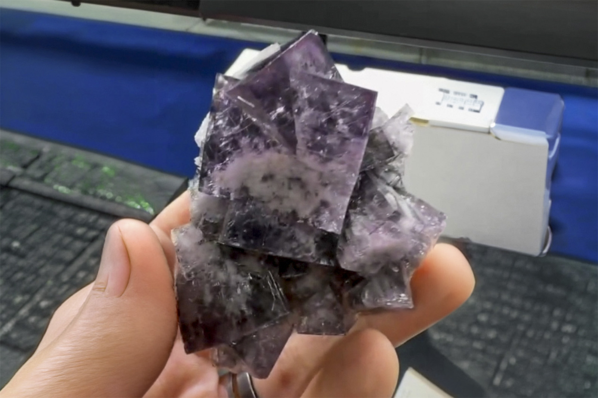

Fluorite
"Purple Rain Pocket Twin Fluorite"
III-10943
Purple Rain Pocket, Fairy Hole Vein, Lady Annabella Mine, Eastgate Quarry, Eastgate, Stanhope, County Durham, England, UK
Purchased 9/9/2026 from UK Mining Ventures for $280.00
Details
Storage: Shelf
Tray: C04 S2
Size class: Small Cabinet (41)
Dimensions: 6.4 × 6.0 × 4.3 cm
Mass: 171.6 g